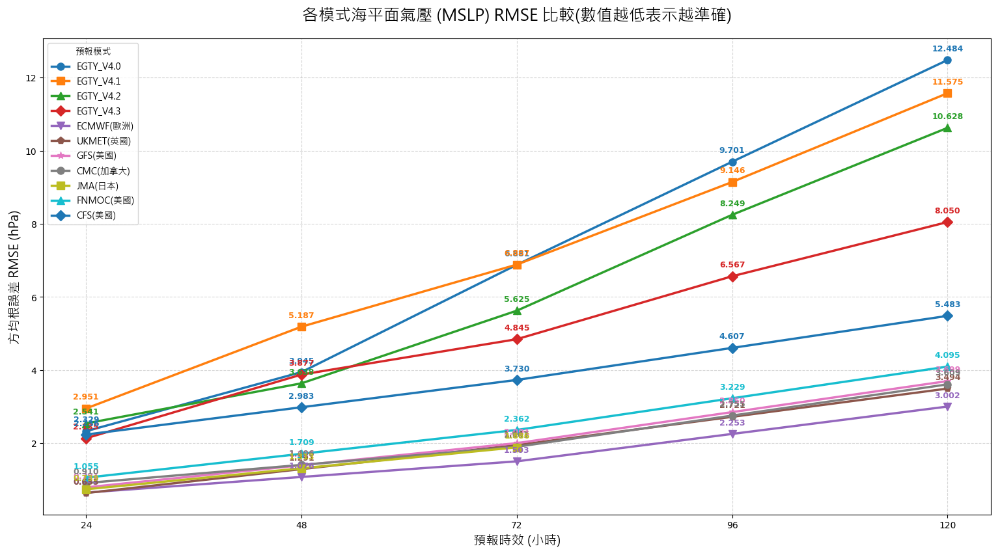

歡迎回來
請進入自研模型 V4 查看最新動態預報。
數值模型僅供參考，實際情況可能有所不同。應以官方機構為準。
當前風暴
比較圖載入中，若檔案存在，將顯示於此。
正在讀取...
該時效圖片不存在
開發中，或許哪次回來就好了 :P
模型說明
EGTY_V4 使用了CNN架構進行預測，礙於內存限制(我只能用免費的.w.)，只使用了2001至2002的氣候資料進行訓練，模型解析度也比正常(720*1440)稍低，下採樣後為360*720(約等於0.5度經緯格每一格)。一共使用了15種動態變數(和3種靜態地形資料)作為輸入，涵蓋了地面(溫度、海平面氣壓、海溫、風速）到高空(850hPa勢位、風力、溫度，500勢位、風力、濕度，200勢位、風力)。 相較V3版本變數增加了4種，預測也有明顯提升。

版本迭代
EGTY_V4.0：架構大改後第一個穩定版(目前網頁使用的模型)。
EGTY_V4.1：基於EGTY_V4.0繼續訓練(未收斂)。
EGTY_V4.2：優化loss函數，強化對極端值的預測(降低低估機率)。
EGTY_V4.3：基於EGTY_V4.2繼續訓練(未收斂)。
EGTY_V4.4：基於EGTY_V4.3繼續訓練(未收斂)。
EGTY_V4.5：將模型大小砍半(>1GB->約500MB)，但訓練資料增加了2003-2004年，預測準度進一步提升
建立網頁
加入了 V4 模型的可視化頁面，包含溫度、氣壓、風速等變數的預報圖展示。
增加模型說明頁面和優化
加入雙緩衝機制，提升播放流暢度。修正為"北"大西洋。加入了模型說明頁面。修正錯誤刪除預報資料。
加入了500hPa比濕，調整色彩顯示，優化風速圖顯示。
加入首頁風暴資訊 & 路徑系集頁面
首頁新增活躍風暴頁面
路徑系集新增 EGTY_V4、FNV3、GENC 三個子頁面，支援風暴選擇與時效播放。
修正一些已知錯誤
優化圖片顯示
版面大更新
優化路徑圖顯示，增加GFS模型，優化頁面排版
模型升級至EGTY_V4.5。
新增模型比較圖
增加模型比較圖功能，修正已知問題
正在初始化清單...
T +0 HR